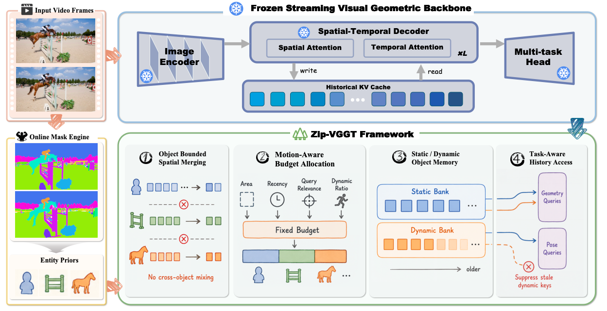
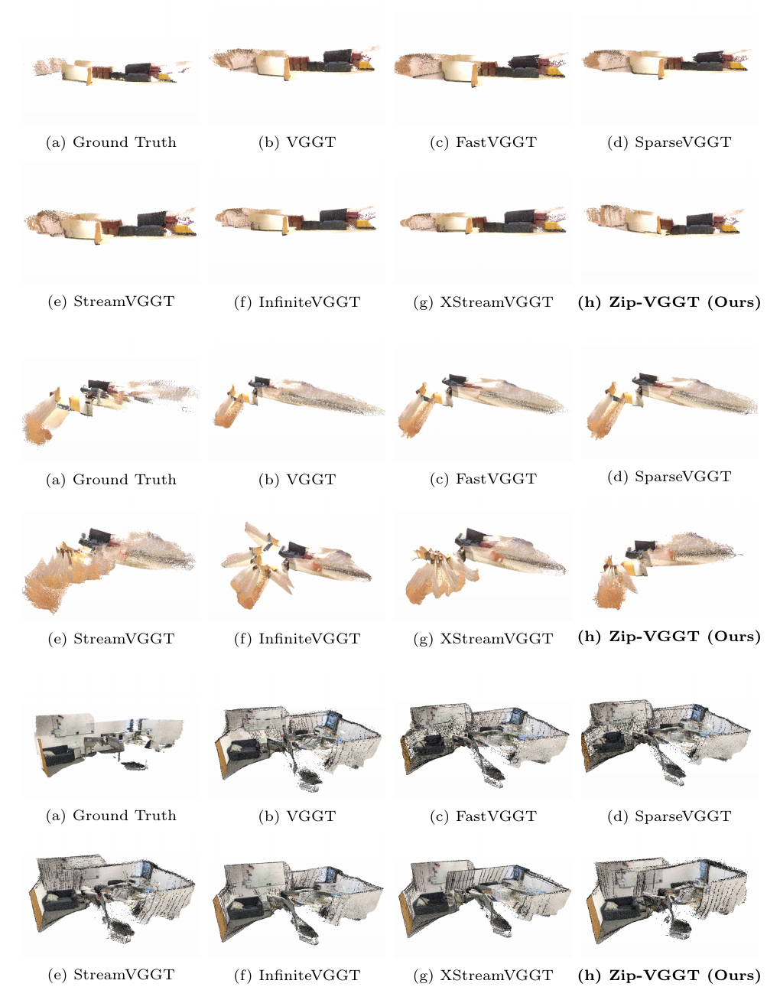
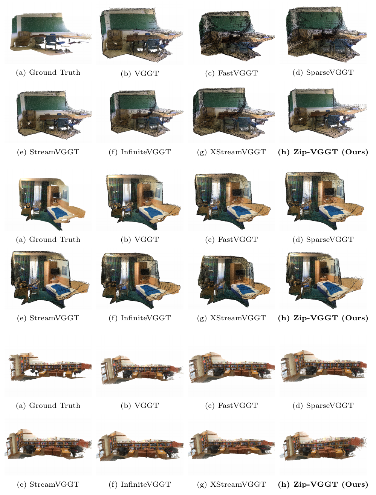

Streaming visual geometry transformers enable online 4D perception, but long-horizon deployment exposes a growing key-value cache bottleneck. Prior compression methods reduce this cost through token merging or temporal eviction, yet they usually operate on tokens instead of physical entities, which can mix geometry across objects or discard useful dynamic history. Zip-VGGT addresses this gap with object-aware spatiotemporal KV control: it uses external entity regions for object-bounded spatial merging, motion-aware temporal budget allocation, static and dynamic object-bank retention, and task-aware history access, while keeping the pretrained backbone fixed. Experiments on depth, pose, and reconstruction benchmarks show that Zip-VGGT keeps memory bounded, remains executable on long streams, and preserves competitive geometric and pose quality.
Zip-VGGT treats the historical KV cache of a streaming geometry transformer as a fixed-budget memory rather than an ever-growing prefix. Each incoming frame is paired with entity regions that are associated over time and projected to the token grid. The controller merges KV states within object boundaries, reserves shared anchors and a short recent window, allocates the remaining budget with motion-aware object scores, and stores selected entries in static and dynamic object banks.

Qualitative Comparison 1

Qualitative Comparison 2

Zip-VGGT addresses long-horizon streaming visual geometry by replacing an ever-growing historical KV cache with object-aware fixed-budget memory. Its core idea is to use physical entities as the shared unit for object-bounded spatial merging and motion-aware temporal allocation, so memory control remains coupled to geometric boundaries and dynamic relevance without modifying the streaming backbone.
The method is scoped as a bounded-memory controller for streaming geometry. Because memory organization uses external object regions, fragmentation, ID switches, occlusion, tiny fast objects, and crowded scenes can affect grouping and allocation quality. Future work should amortize object-prior generation and model object uncertainty inside the controller.